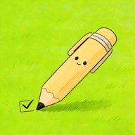

小成就
Small Wins
记录每天的小小进步。
首页
记录微光
成就墙
随机回顾
设置
—
晚上好，夏央
今日能量
“你不需要很厉害才开始，你需要开始才会变厉害。”
🏆 成就记录
0
已坚持 0 天
去记录
💗 小确幸墙
0
0 个瞬间
去看看
最近的小快乐
还没有记录～先写下第一件小小进步吧 ✨
✨ 记录微光
选择心情
🌙 平静
✨ 愉悦
🌱 释然
☁️ 慵懒
封存这一刻
📅 今天
清空今天
今天还没有记录～
🧱 成就墙（全览 + 搜索）
#运动
#生活
清空
全部记录
还没有记录～
🎲 随机回顾
你抽到的是：
—
—
再来一条
删除
⚙️ 设置
这是一个离线友好的 PWA 原型。数据保存在本地浏览器（localStorage），不会上传服务器。
安装到手机（添加到桌面）
✅ 可安装：点击上方按钮即可添加到桌面。
昵称（用于首页问候语）
保存昵称
保存后首页会显示：
晚上好，夏央
导出为文本（复制）
清空全部数据